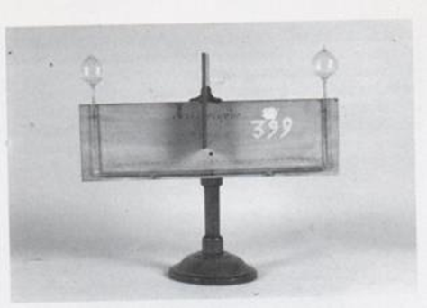

Termoscopio di Rumford
Scuola di provenienza: Istituto agrario "F. De Sanctis", Avellino
Settore: Termologia
Costruttori: Sconosciuto
Materiali: Legno e vetro
Accessori: Nessuno
Stato di conservazione: Buono
Descrizione: È uno strumento che permette di misurare delle piccole differenze di temperatura. È costituito da un tubo di vetro ripiegato due volte ad angolo retto, in modo da formare un ramo orizzontale lungo e due rami più corti verticali, paralleli. Il tubo termina alle due estremità con due bolle di vetro uguali. Nel ramo orizzontale si trova un indice di liquido, il quale, quando le due bolle sono alla stessa temperatura, si trova nel mezzo (lo zero) di una scala graduata posta in corrispondenza dello stesso ramo orizzontale. Se la temperatura di una delle bolle aumenta, l’indice si sposta di un certo numero di gradi verso l’altra bolla. La piccola ampollina situata a destra del tubo orizzontale serve per raccogliere il liquido dell’indice se una bolla contiene più aria dell’altra, sicché, a parità di temperatura l’indice non sta sullo zero: allora, si cerca di far entrare il liquido nella ampollina, in modo che le due bolle siano in comunicazione tra loro e siano quindi ugualmente piene d’aria; si riporta il liquido (indice) al suo posto.